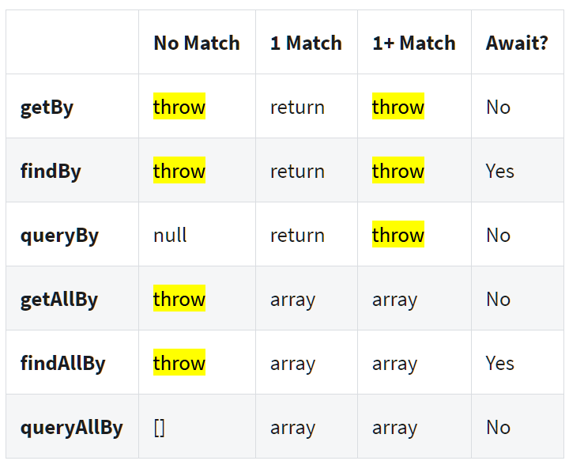

tips n tricks with jest testing (of react)
Only and Skip
You have a .test.tsx file with many tests, they all start like this...
test("Laser guidance", async () => {
test("Laser cooling", async () => {
test("Laser calibration", async () => {
You want to run just 1 test? Change it to use test.only...
test.only("Laser guidance", async () => {
test("Laser cooling", async () => {
test("Laser calibration", async () => {
You can also use this to run more than one. The .only does not need to be exclusive
test.only("Laser guidance", async () => {
test.only("Laser cooling", async () => {
test("Laser calibration", async () => {
And you could instead use .skip to avoid the one you don't want...
test("Laser guidance", async () => {
test("Laser cooling", async () => {
test.skip("Laser calibration", async () => {
wait for the whole render
There might be race conditions in your render that you're not able to fix right now, and which result in intermittent failures, i.e. flaky tests.
wrap the render in an act so that the whole thing really must finish before the test proceeds...
await act( async () => render(routerWrapper(employeeWrapper(<EmployeeProfile />))));
...this will cause a warning.
screen debug
You can output/log what the screen holds with screen.debug
get/find/query -- which is what?

—source - '#Queries' in cheatsheet)
Fix "overlapping act() calls" warning
I saw this warning being produced by some test:
Warning: You seem to have overlapping act() calls, this is not supported. Be sure to await previous act() calls before making a new one
The problem in this case was lines of code that just said:
screen.findByText("testEmail@email.com");
...all of the .find methods are async, and must be awaited. (this includes findBy* and findAllBy)
So it needed to become:
await screen.findByText("testEmail@email.com");
or the synchronous alternative:
screen.queryByText("testEmail@email.com");